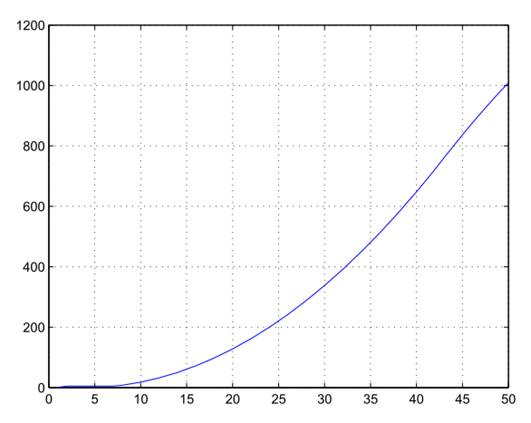
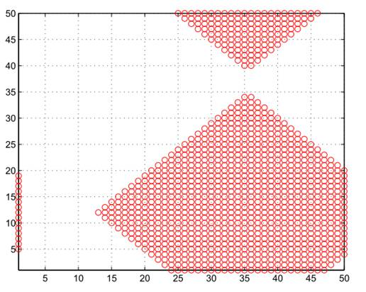

Why Won`t Cannibals Eat Clowns?
Florian Artinger,
Navid Hassanpour, Jasmin Kominek
1. Introduction
Some jokes are around for only a short time, while other jokes persist
through the ages. How can this come about? In modeling the propagation of a joke
in a system we considered three levels: the joke, the agent, and the network
structure. In the initial model we mainly focus on the properties of the joke
itself in exploring what aids and hinders the propagation. In later stages
variations on the agent´s behavior and the network structure could be explored.
2. Model
The quality of the joke and hence its propagation in a given system was
modeled to be dependent on the four following factors:
·
Funniness: The funnier a joke,
the better the agent will like the joke. Possible values: 0 to 1 in intervals
of 0.1.
·
Memorability: The easier a
joke can be memorized, e.g. the shorter it is, the better a joke will spread in
a system. Possible values: 0 to 1 in intervals of 0.1.
·
Novelty: if an agent in a
given network has not encountered the joke previously, the joke will be liked
better. Possible values: 0 or 1 where 1 means the joke is novel to the agent
and 0 otherwise.
·
Appropriateness: The more
agents in the immediate neighborhood of an agent like the joke, the more a
given agent will like the joke also. Possible values: 0 to 1 in intervals of
1/N where N is the number of agents that an individual agent is linked to.
Possible values: 0 or 1 where 1 means the joke is appropriate to the agent and
0 otherwise. Appropriateness is occurs if more than one neighboring agent has
adopted the joke
Funniness and memorability are objective parameters of the joke that remain
constant with its propagation in the network. They are defined at the
initiation of the joke. Novelty and appropriateness are subjective parameters
of a joke in the sense that they vary depending on the location of the joke in
the network. The variance of the level of appropriateness hinges on the number
of links of an agent and hence the network structure.
The overall quality of the joke is computed by the weighted sum of the four
parameters, whereby the two objective parameters funniness and memorability are
generated via a random draw from a uniform distribution. Initially one agent in
the network is randomly chosen to like the joke and serve as a starting point.
She passes on the joke to the neighbors in her immediate vicinity. These agents
evaluate the joke based on whether the computed quality exceeds the threshold
of the individual agent. If this is the case, the agent will adopt the joke and
transmit it to its neighbors who then evaluate the joke.
In addition, the possibility that a joke can be forgotten is utilized: if
the joke is not heard for some extended amount of time by an agent, i.e. no one
of her immediate network neighbors transmits it, the agent forgets that she has
heard of the joke previously. An interesting scenario occurs when a joke
initially does not pass the acceptance threshold of an agent, but can spread in
the neighborhood. Once an agent has forgotten that she has heard the joke and
it becomes novel again to her and appropriateness is now achieved as more
neighbors started liking the joke, the agent might now also like the joke. This
scenario generates an instance where temporary a plateau can arise (see figure
3 and 4).
3. Results
3.1 Two-Dimensional Grid
The initial network topology that we chose is a 2-dimensional grid, hence
each agents has 4 links.
|
|
|
|
Figure 1: Full adoption of
joke with N=100 and 50 time intervals. |
Figure 2: Agents that
adopted the joke at t = 20 (N=50) from figure 1. |


As one can see in figure 1, the joke is adapted by the entire network after
36 rounds. However, before this is achieved, the joke is going through two
phases where it rests for some time on a plateau and is not further propagated
in the network. The first instance occurs after 2 rounds where only 5 agents
(including the starting agent) have adopted the joke. In this example the joke is not novel for these
five agents for five time periods (that is the length of agents` memory). After
five time units, the joke is forgotten, hence it is new again and agents start
adopting it, because novel jokes are more likely to be passed along.
|
|
|
|
Figure 3: Mildly funny joke:
with N=100 and after 50 time intervals adoption does not proceed beyond the
level of 20 agents. |
Figure 4: Agents that
adopted the joke at t = 20 (N=50). |


In figure 3 and 4 we can observe a joke that is only mildly funny, i.e. the
random draws of the parameters funniness and memorability in interaction with
novelty and appropriateness did not generate a quality level that resulted in
full propagation in the network. Instead, only 20 agents adopt the joke and
form an island in the network structure.
|
 |
 |
|
Figure
5: With N = 2500, adaptation does not end here after 50 rounds. |
Figure 6: Agents that
adopted the joke at t = 50 (N=2500). |
In figure 5 we can observe the propagation of a joke
in a network with 2500 agents. 50 rounds are not enough for full propagation.
This is also shown in figure 6 which displays the location of the population on
the grid.
3.2 Further network
topologies
The simulation below allows one to explore the
propagation of the joke in different network topologies. Central to the
manipulation of the network topology are following sliders:
·
Number of nodes:
allows to manipulate how many agents (i.e. nodes in the network)
·
Average node
degree: How many connections a node on average has.
Notice that as you decrease the average node degree
for instance from10 to 2, that the network topology does not allow the joke to
propagate very far.
4. Summary
The model could potentially be applied to processes
such as gossip algorithms or innovation diffusion (note, the platforms
generated in figure 1 could be for instance interpreted with the initial halt
in adoption of touch screens in mobile phones; once Apple introduced the
iPhone, the propagation of touch screens for mobile phones picked up again).
Next steps in the modeling process include changing
the network topology and exploring issues such as small world networks, random
connections, or having a co-evolving network in place. Also agents can be given
factors that influence the adoption, such as the ability to tell a joke. A
further alternative is to have multiple jokes in the network.